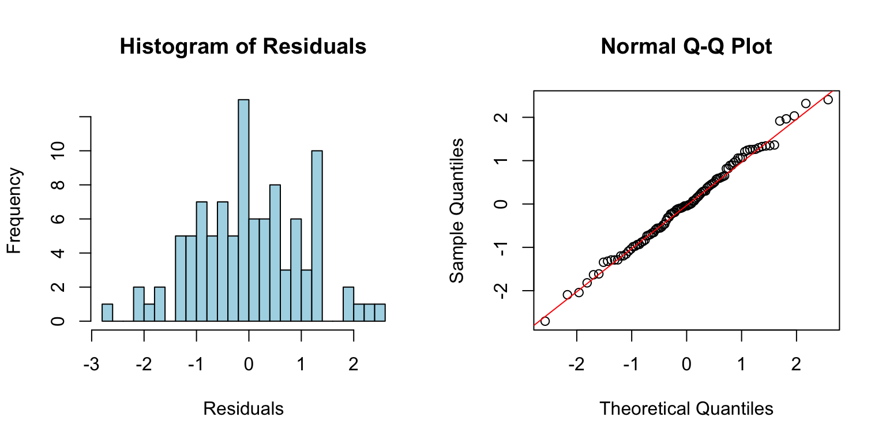

Residuals are the differences between observed values and values predicted by the model:
\[e_i = y_i - \hat{y}_i\]
They represent the part of the data not explained by the model—the “leftover” variation. Analyzing residuals helps us check whether the assumptions of our model are met and identify potential problems.
Figure 24.1: Conceptual illustration of residuals as the vertical distances between observed data points and the fitted regression line
24.2 Why Residual Analysis Matters
A regression model might fit the data well according to R-squared while still being inappropriate. The model might capture the wrong pattern, miss non-linear relationships, or be unduly influenced by outliers. Residual analysis reveals these problems.
Remember Anscombe’s Quartet—four datasets with identical regression lines but very different patterns. Looking only at the regression output would miss these differences entirely.
Figure 24.2: Anscombe’s Quartet demonstrating why residual analysis is essential, showing four datasets with identical regression statistics but different patterns
24.3 Checking Assumptions
Linearity
If the relationship is truly linear, residuals should show no systematic pattern when plotted against fitted values or the predictor variable. A curved pattern suggests non-linearity.
Code
# Create data with non-linear relationshipset.seed(42)x <-seq(0, 10, length.out =100)y <-2+0.5* x +0.1* x^2+rnorm(100, sd =1)model <-lm(y ~ x)par(mfrow =c(1, 2))plot(x, y, main ="Data with Quadratic Pattern")abline(model, col ="red")plot(fitted(model), residuals(model), main ="Residuals vs Fitted",xlab ="Fitted values", ylab ="Residuals")abline(h =0, col ="red", lty =2)
Figure 24.3: Checking linearity assumption with quadratic data, showing how a curved pattern in residuals vs fitted values reveals nonlinearity
The curved pattern in the residual plot reveals that a linear model is inadequate.
Normality
Residuals should be approximately normally distributed. Check with a histogram or Q-Q plot:
Code
# Good model for comparisonx2 <-rnorm(100)y2 <-2+3* x2 +rnorm(100)good_model <-lm(y2 ~ x2)par(mfrow =c(1, 2))hist(residuals(good_model), breaks =20, main ="Histogram of Residuals",xlab ="Residuals", col ="lightblue")qqnorm(residuals(good_model))qqline(residuals(good_model), col ="red")

Figure 24.4: Checking normality assumption using histogram and Q-Q plot of residuals from a well-fitting model
Points on the Q-Q plot should fall approximately along the diagonal line. Systematic departures indicate non-normality.
Homoscedasticity
Residuals should have constant variance across the range of fitted values. A fan or cone shape indicates heteroscedasticity (unequal variance).
Figure 24.5: Examples of homoscedasticity (constant variance) and heteroscedasticity (non-constant variance) in residual plots
Independence
Residuals should be independent of each other. This is hard to check visually but is violated when observations are related (e.g., repeated measurements on the same subjects, or time series data).
24.4 Diagnostic Plots in R
R provides built-in diagnostic plots for linear models:
Code
# Standard diagnostic plotspar(mfrow =c(2, 2))plot(good_model)
Figure 24.6: Complete set of standard diagnostic plots for regression model assessment including residuals vs fitted, Q-Q plot, scale-location, and residuals vs leverage
These four plots show: 1. Residuals vs Fitted: Check for linearity and homoscedasticity 2. Q-Q Plot: Check for normality 3. Scale-Location: Check for homoscedasticity 4. Residuals vs Leverage: Identify influential points
24.5 Leverage and Influence
Not all observations affect the regression equally. Leverage measures how unusual an observation’s X value is—points with extreme X values have more potential to influence the fitted line.
Cook’s Distance measures how much the regression would change if an observation were removed. High Cook’s D values indicate influential points that merit closer examination.
Figure 24.7: Illustration of leverage and influence showing how high-leverage points with large residuals can strongly affect the fitted regression line
Code
# Check for influential pointsinfluence.measures(good_model)$is.inf[1:5,] # First 5 observations
When assumptions are violated, several approaches may help:
Transform the data: Log, square root, or other transformations can stabilize variance and improve linearity.
Use robust regression: Methods like rlm() from the MASS package down-weight influential observations.
Try a different model: Non-linear regression, generalized linear models, or generalized additive models may be more appropriate.
Remove outliers: Only if you have substantive reasons—never simply to improve fit.
24.7 Residual Analysis Workflow
A systematic approach to residual analysis:
Fit the model
Generate diagnostic plots
Check for patterns in residuals vs. fitted values
Examine the Q-Q plot for normality
Look for influential points
If problems exist, consider transformations or alternative models
Re-check diagnostics after any changes
Residual analysis is not optional—it is an essential part of any regression analysis. Models that look good on paper may tell misleading stories if their assumptions are violated.
Source Code
# Residual Analysis {#sec-residual-analysis}```{r}#| echo: false#| message: falselibrary(tidyverse)theme_set(theme_minimal())```## What Are Residuals?Residuals are the differences between observed values and values predicted by the model:$$e_i = y_i - \hat{y}_i$$They represent the part of the data not explained by the model—the "leftover" variation. Analyzing residuals helps us check whether the assumptions of our model are met and identify potential problems.{#fig-residuals-concept fig-align="center"}## Why Residual Analysis MattersA regression model might fit the data well according to R-squared while still being inappropriate. The model might capture the wrong pattern, miss non-linear relationships, or be unduly influenced by outliers. Residual analysis reveals these problems.Remember Anscombe's Quartet—four datasets with identical regression lines but very different patterns. Looking only at the regression output would miss these differences entirely.{#fig-anscombe-residuals fig-align="center"}## Checking Assumptions### LinearityIf the relationship is truly linear, residuals should show no systematic pattern when plotted against fitted values or the predictor variable. A curved pattern suggests non-linearity.```{r}#| label: fig-linearity-check#| fig-cap: "Checking linearity assumption with quadratic data, showing how a curved pattern in residuals vs fitted values reveals nonlinearity"#| fig-width: 8#| fig-height: 4# Create data with non-linear relationshipset.seed(42)x <-seq(0, 10, length.out =100)y <-2+0.5* x +0.1* x^2+rnorm(100, sd =1)model <-lm(y ~ x)par(mfrow =c(1, 2))plot(x, y, main ="Data with Quadratic Pattern")abline(model, col ="red")plot(fitted(model), residuals(model), main ="Residuals vs Fitted",xlab ="Fitted values", ylab ="Residuals")abline(h =0, col ="red", lty =2)```The curved pattern in the residual plot reveals that a linear model is inadequate.### NormalityResiduals should be approximately normally distributed. Check with a histogram or Q-Q plot:```{r}#| label: fig-normality-check#| fig-cap: "Checking normality assumption using histogram and Q-Q plot of residuals from a well-fitting model"#| fig-width: 8#| fig-height: 4# Good model for comparisonx2 <-rnorm(100)y2 <-2+3* x2 +rnorm(100)good_model <-lm(y2 ~ x2)par(mfrow =c(1, 2))hist(residuals(good_model), breaks =20, main ="Histogram of Residuals",xlab ="Residuals", col ="lightblue")qqnorm(residuals(good_model))qqline(residuals(good_model), col ="red")```Points on the Q-Q plot should fall approximately along the diagonal line. Systematic departures indicate non-normality.### HomoscedasticityResiduals should have constant variance across the range of fitted values. A fan or cone shape indicates heteroscedasticity (unequal variance).{#fig-heteroscedasticity fig-align="center"}### IndependenceResiduals should be independent of each other. This is hard to check visually but is violated when observations are related (e.g., repeated measurements on the same subjects, or time series data).## Diagnostic Plots in RR provides built-in diagnostic plots for linear models:```{r}#| label: fig-diagnostic-plots#| fig-cap: "Complete set of standard diagnostic plots for regression model assessment including residuals vs fitted, Q-Q plot, scale-location, and residuals vs leverage"#| fig-width: 8#| fig-height: 8# Standard diagnostic plotspar(mfrow =c(2, 2))plot(good_model)```These four plots show:1. **Residuals vs Fitted**: Check for linearity and homoscedasticity2. **Q-Q Plot**: Check for normality3. **Scale-Location**: Check for homoscedasticity4. **Residuals vs Leverage**: Identify influential points## Leverage and InfluenceNot all observations affect the regression equally. **Leverage** measures how unusual an observation's X value is—points with extreme X values have more potential to influence the fitted line.**Cook's Distance** measures how much the regression would change if an observation were removed. High Cook's D values indicate influential points that merit closer examination.{#fig-leverage-influence fig-align="center"}```{r}# Check for influential pointsinfluence.measures(good_model)$is.inf[1:5,] # First 5 observations```## Handling ViolationsWhen assumptions are violated, several approaches may help:**Transform the data**: Log, square root, or other transformations can stabilize variance and improve linearity.**Use robust regression**: Methods like `rlm()` from the MASS package down-weight influential observations.**Try a different model**: Non-linear regression, generalized linear models, or generalized additive models may be more appropriate.**Remove outliers**: Only if you have substantive reasons—never simply to improve fit.## Residual Analysis WorkflowA systematic approach to residual analysis:1. Fit the model2. Generate diagnostic plots3. Check for patterns in residuals vs. fitted values4. Examine the Q-Q plot for normality5. Look for influential points6. If problems exist, consider transformations or alternative models7. Re-check diagnostics after any changesResidual analysis is not optional—it is an essential part of any regression analysis. Models that look good on paper may tell misleading stories if their assumptions are violated.